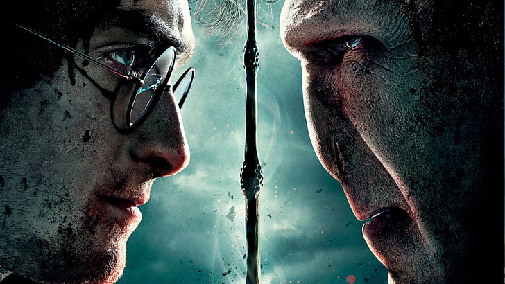
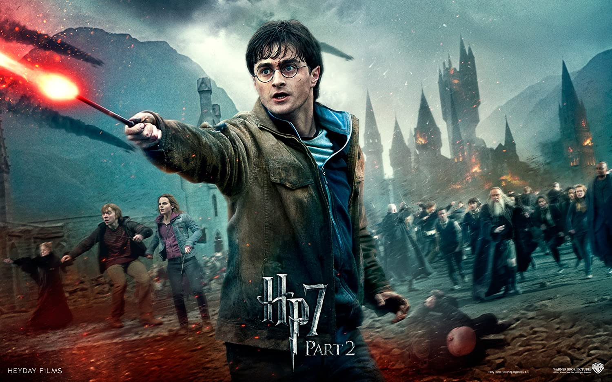
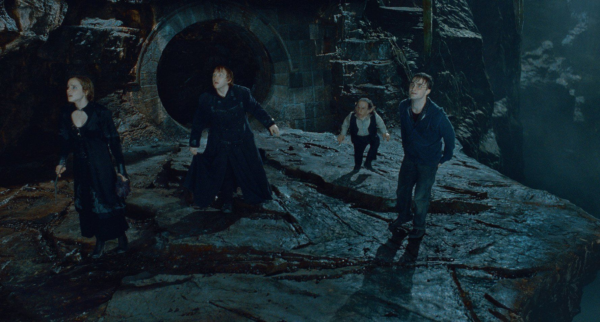

Harry Potter and the Deathly Hallows – Part 2 is a 2011 fantasy film directed by David Yates and distributed by Warner Bros. Pictures. It is the second of two cinematic parts based on J. K. Rowling's 2007 novel of the same name and the eighth and final instalment in the Harry Potter film series. It was written by Steve Kloves and produced by David Heyman, David Barron, and Rowling. The story continues to follow Harry Potter's quest to find and destroy Lord Voldemort's Horcruxes in order to stop him once and for all.
  